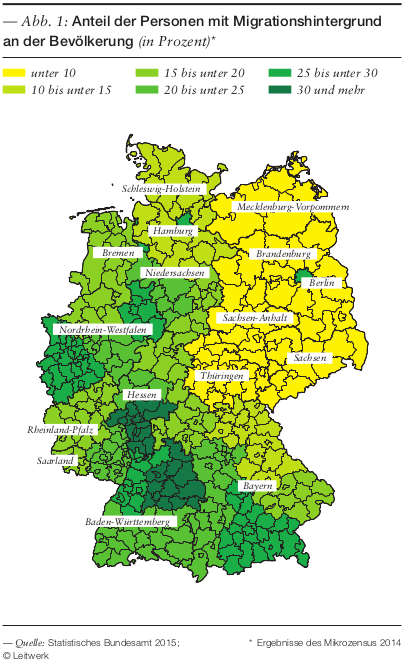

3 Wer sind die Deutschen?
| Themen | Image der Deutschen, Einwanderung, die neuen Deutschen |
| Lernziele | Sie lernen, über nationale Identität nachzudenken, und erweitern ihr Bild von den Deutschen |
Beraten Sie mit Ihrer Partnerin und geben Sie Ihre Antworten dann online:
Was finden Sie…
| …typisch chinesisch? | …typisch deutsch? |
|---|---|
Überprüfen Sie im Kurs, ob alle den Antworten zustimmen. Einige Antworten sind wahrscheinlich Klischees (d.h. veraltete Vorstellung) oder Stereotype (d.h. vereinfachtes Bild). Formulieren Sie einige Sätze mit folgenden Anfängen und beobachten Sie, wie sich die Zustimmung im Kurs verändert.
Einige Deutsche / Chinesen …
Viele Deutsche / Chinesen …
Ein Großteil der Deutschen / Chinesen …
Fast alle Deutschen / Chinesen …
Alle Deutschen / Chinesen …
Das Selbstbild einer Gruppe (z.B. was Chinesen glauben, wie Chinesen sind) stimmt oft nicht mit dem Fremdbild überein (z.B. was Deutsche glauben, wie Chinesen sind). Im interkulturellen Kontakt führt das manchmal zu Missverständnissen oder sogar Diskriminierung.
Das Selbstbild einer Gruppe ist wandelbar und wird gesellschaftlich ausgehandelt. Die Frage Wer sind wir
eigentlich? stellt sich besonders im Kontakt mit Fremden
. Das folgende Video erschien im Jahr 2016 als Teil einer gesellschaftlichen Debatte über die Einwanderung vieler Flüchtlinge im Jahr 2015. Damals kamen viele Menschen aus Syrien und von anderswo nach Deutschland. Ein Teil der Deutschen hieß sie willkommen. Ein anderer Teil lehnte sie ab und war der Meinung, dass in Deutschland kein Platz für Einwanderer sei, weil die Einwanderer anders
seien.
Welche Klischees und Stereotype der Deutschen über sich selbst entdecken Sie im Video?
Lesen Sie folgenden Text zum Thema Einwanderung nach Deutschland und bearbeiten Sie die Aufgaben. Beraten Sie über die Antworten in kleinen Gruppe. Für die Bearbeitung von Aufgabe 3 ist diese Karte nützlich. Vergleichen Sie anschließend Ihre Antworten im Plenum. (Lehrerblatt)

Zahlen und Fakten beschreiben Einwanderung nur auf eine objektive Weise. Die eingewanderten Menschen bleiben dabei unbeachtet. Lesen Sie folgenden Auszug aus dem Buch Wir neuen Deutschen. Das Buch beschreibt das Leben und die Ansichten von drei jungen Frauen names Özlem Topçu, Alice Bota und Khuê Pham. Lesen Sie den Auszug und diskutieren Sie anschließend in der Gruppe das Gefühl der drei Frauen, ob sie sich selbst als Deutsche fühlen und was Herkunft und Heimat für sie bedeuten. Teilen Sie Ihre Ansichten und Einsichten abschließend im Plenum.
Ich finde, dass …
Meiner Meinung nach …
Ich glaube (nicht), dass …
Vermutlich fühlen sie sich …
Denken Sie noch einmal an die heutige Stunde. Was war für Sie neu? Formulieren Sie einen Satz.
- Schreiben Sie einen kleinen Tagebucheintrag (200-300 Wörter), in dem Sie über die Frage Wer sind
wir
eigentlich? nachdenken und Ihre eigene Antwort geben. Schicken Sie mir den Text vor der nächsten Stunde zu. - Lesen Sie in Tatsachen über Deutschland die Seiten 118-121 über Einwanderung.
- Wenn Sie mögen, schicken Sie mir ein Foto von Ihnen zusammen mit Ihrer Familie. Nächste Woche werden Sie dann das Foto in der Klasse beschreiben. Ein Thema nächste Woche ist Familie!